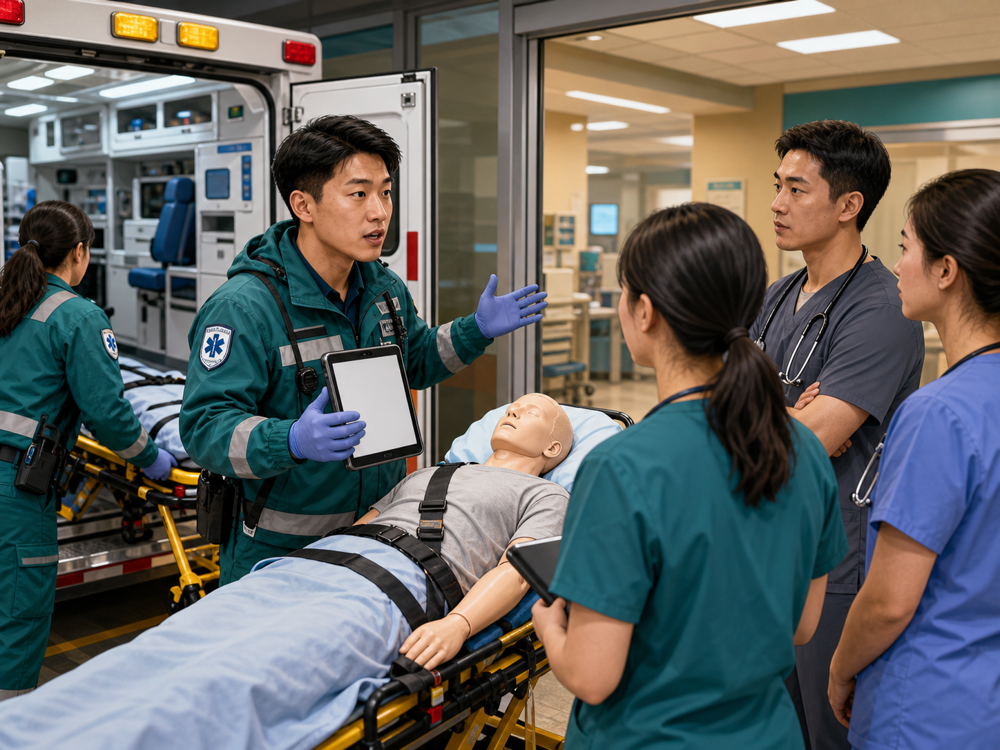

观察线索Observation cues
先看空间、通道、设备和团队角色。Start with space, pathways, equipment, and roles.
pending_clinician_review匿名化复合场景：患者尚未到达，院前信息不完整，团队正在准备空间、角色和资源。学习目标是看懂抢救室，而不是抢答诊断。An anonymized composite scene: the patient has not arrived, prehospital information is incomplete, and the team is preparing space, roles, and resources. The learning goal is to read the trauma bay, not guess the diagnosis.
让初学者先看懂空间、角色和信息流，再进入具体章节。Help learners read space, roles, and information flow before the lessons.

先看空间、通道、设备和团队角色。Start with space, pathways, equipment, and roles.
pending_clinician_review
交接内容分为已知、未知和担心。Sort handoff into known, unknown, and concern.
source_required
团队任务是否改变下一次观察重点。Whether team tasks change the next observation focus.
pending_clinician_review第一次进入抢救室时，学习者最容易被声音、人员和设备压住注意力。本课先建立空间地图，再把院前信息、团队角色和前几分钟的并行任务放进同一张图。First-time learners can be overwhelmed by noise, people, and equipment. This course starts with a room map, then places pre-arrival information, team roles, and early parallel tasks on one visual board.
空间感能降低紧张，帮助学习者知道哪些通道和关键岗位不应被阻挡。Spatial awareness lowers cognitive load and helps learners avoid blocking key paths and positions.
看床头气道区、床旁循环区、监护屏、记录位置、药械车、出入口和团队领导位置。Watch the airway zone, bedside circulation area, monitor, scribe position, equipment cart, entrances, and team leader position.
把谁在做什么、信息从哪里来、何时复述确认、何时复评放在一起。Link who is doing what, where information comes from, when read-back happens, and when reassessment occurs.
图示不代表任何医院固定布局、人员编制、启动标准或真实患者医嘱。The diagram is not a fixed hospital layout, staffing model, activation criterion, or real-patient order.
把机制、预计到达、已知损伤、未知项和团队担心事项分开记录；未知项不靠猜测填空。Separate mechanism, estimated arrival, known injuries, unknowns, and team concerns; unknowns are not filled by guessing.
理解 leader、airway、circulation、nursing、scribe 和 learner observer 的并行协作边界。Understand the parallel teamwork boundaries of leader, airway, circulation, nursing, scribe, and learner observer roles.
练习简短、指向明确、可复述确认的表达；避免长篇解释和未经确认的判断。Practice concise, directed, read-back-ready wording; avoid long explanations and unverified conclusions.
模拟后复盘聚焦站位是否安全、是否听懂关键信息、是否在合适时间提问。Post-simulation debrief focuses on safe positioning, key information, and timing of questions.
选择不阻挡气道、通道、药械和核心任务的位置。Choose a position that does not block airway access, traffic, equipment, or core tasks.
把院前通报内容分到已知、未知、需要确认、可能需要资源四类。Sort pre-arrival information into known, unknown, needs confirmation, and may require resources.
选择更适合团队复述确认的短句，不要求给治疗方案。Choose wording suited for team read-back; no treatment plan is requested.
CLAIM-TRAUMA-ACADEMY-001-TEAM-PREP抢救室团队准备和角色分工用于流程教育，本地确认仍需要。Trauma bay team preparation and role mapping are used for process education; local confirmation is still required.
pending_local_confirmationCLAIM-TRAUMA-ACADEMY-001-HANDOFF-LANGUAGE交接与闭环沟通表述待创伤团队教学审核。Handoff and closed-loop communication wording awaits trauma-team teaching review.
pending_clinician_review